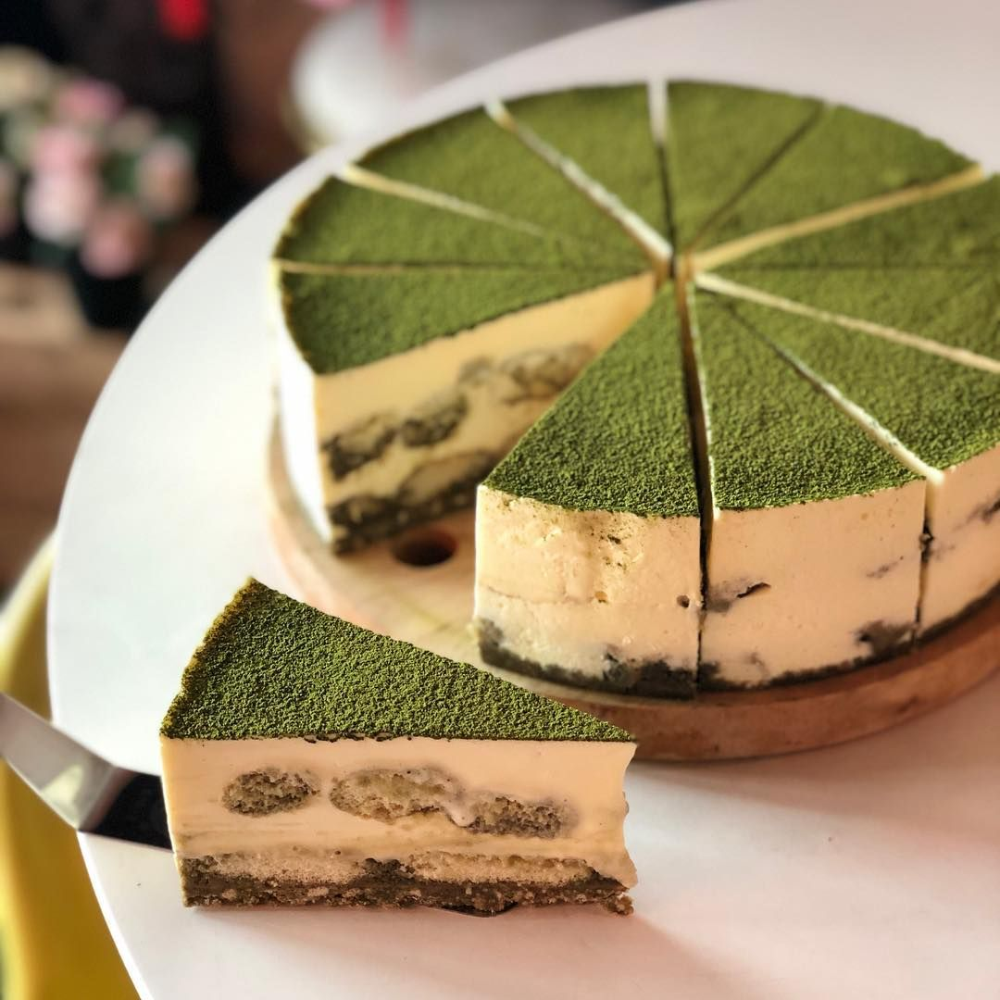

Matcha Tiramisu

Description
Did you ever want something Matcha, but also were craving Tiramisu? Well today is your lucky day! Tiramisu
is a dessert originating from Italy. It's made from lady fingers soaked in coffee layered between
whipped mascarpone cream. What makes it so irresistible is the perfect blend of bitterness from the coffee
yet also sweet from the condensed milk.
Ingredients
Brewed Coffee
- ¾ cup brewed coffee
- 1 tbsp amaretto (optional)
Mascarpone Cream
- ⅓ cup condensed milk
- 1 tbsp matcha powder
- 3 egg yolks
- 8 oz mascarpone cheese
- 2 tbsp brewed coffee
- 1 tsp vanilla extract
- 1 cup heavy cream
Tiramisu Assembly
- 40 lady fingers
- 1 tbsp matcha powder
Steps
- Combine your brewed coffee with amaretto in a bowl. Set aside.
- Mix the condensed milk and matcha together until a uniform green color. Sift the matcha powder into
the condensed milk.
- Next make your mascarpone filling. Bring a few cups of water (2-3 cups) to a simmer in a small sauce pan.
- Add egg yolks and matcha condensed milk to a bowl. Put the bowl on top of the simmering water and mix until the
egg mixture turns a lighter green color (3-5 minutes). Remove from the heat.
- Add the mascarpone cheese, brewed coffee, and vanilla extract to the egg mixture and mix until well incorporated.
- Whip heavy cream until stiff peaks. Gently fold the cream into the mascarpone mixture from step 5. Set aside.
- Now it's time to assemble your tiramisu. Lightly dip a lady finger in the brewed coffee and place it in a 9x9 baking dish.
Or deep pie dish. Repeat this process until the bottom is lined with lady fingers.
- Scoop half the mascarpone cream onto the lady fingers. Spread it out in an even layer on top of the lady fingers.
Repeat this process with a second layer of lady fingers and then a second layer of mascarpone cheese.
- Sift matcha powder on top of the second layer of mascarpone cream.
- Cover the tiramisu and place it in the fridge. Let it set in the fridge for 6 hours or overnight.
For the best flavor and texture, let it set in the fridge overnight.
- Cut into slices and enjoy!